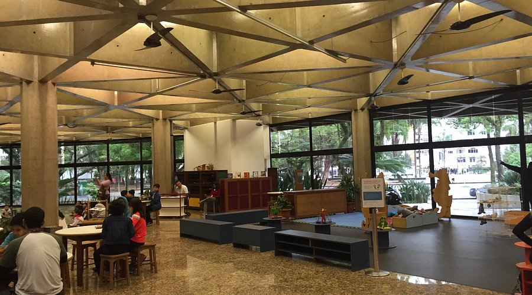
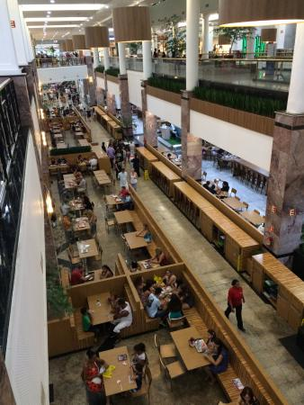
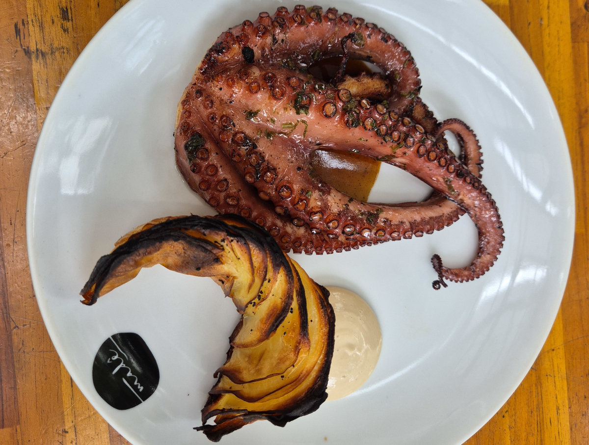
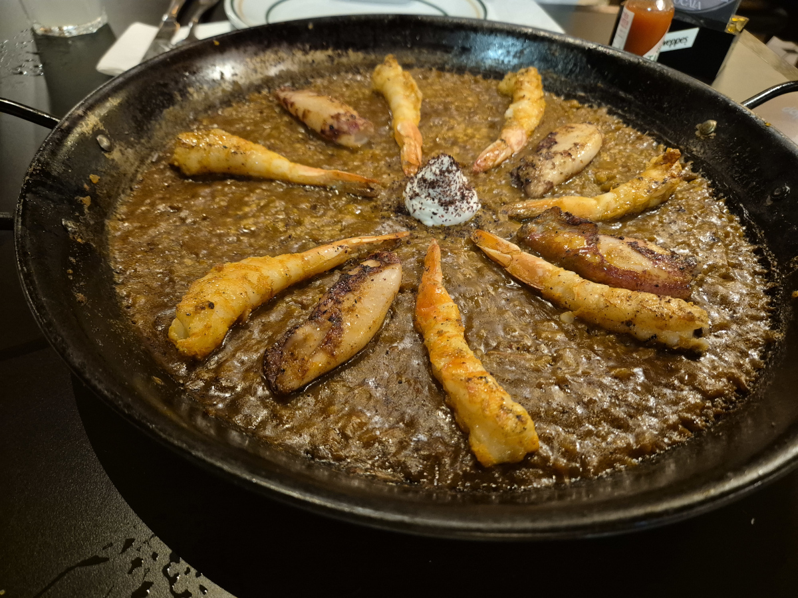
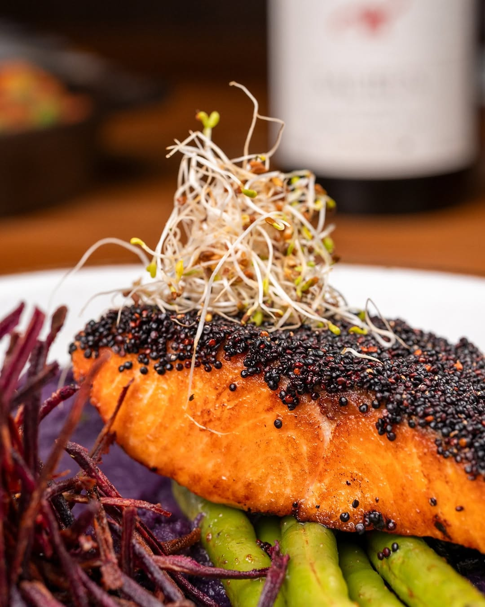

SESC-Santos & Nearby Options
Convenience / Casual📍 Rua Conselheiro Ribas, 136 - Aparecida
For days packed with workshop sessions, the Restaurante Sesc Santos located right inside the venue offers a highly practical and affordable cafeteria-style lunch. It provides balanced, traditional Brazilian day-to-day meals without needing to travel.
Exploring the Neighborhood: If you want to step out for a quick break, the Aparecida neighborhood is highly walkable. Just a few blocks away lies the Praiamar Shopping complex, which features a vast food court and several premium chain restaurants, perfect for a fast, reliable meal before heading back to the afternoon sessions.


Madê Cozinha Autoral
Contemporary Seafood
📍 R. Afonso Celso de Paula Lima, 55 - Ponta da Praia
Recognized among the 100 Best Restaurants in Brazil, Madê is an intimate, award-winning culinary destination helmed by Chef Dário. The menu is a celebration of the sea, where everything from fish to octopus is expertly prepared over an open flame.
What to order: The 13-course tasting menu is the best way to understand the chef's vision. Expect innovative flavor profiles that elevate the fresh daily catch, often incorporating earthy mushroom bases or bright, subtle cachaça glazes to build complex, unforgettable dishes. Their dessert menu is equally spectacular.
Tocaia Bar e Restaurante
Iberian Contemporary📍 Av. Rei Alberto I, 280 - Ponta da Praia
A brilliant new addition to the Ponta da Praia neighborhood, Tocaia combines the convivial culture of Spanish and Portuguese tapas bars with upscale modern gastronomy. The beautifully designed space is meant for lingering, making it ideal for evening networking or relaxing after the workshop.
What to order: Tocaia thrives on shared plates. Explore their Iberian-inspired tapas paired with their extensive menu of classic and authorial cocktails. Look out for their signature Rabanada with vanilla ice cream if you have a sweet tooth to end the night.

Banana Café
Vibrant Gastrobar
📍 Gonzaga
Bringing massive energy to the Gonzaga district, Banana Café is a sprawling gastrobar featuring a beautiful vertical garden, a charming pergola, and plenty of outdoor seating. It’s the perfect spot to enjoy Santos' warm coastal evenings.
What to order: The menu is packed with satisfying comfort classics. Start with the rich Rib Croquettes (Croquete de Costela) or the crispy Breaded Brie. For the main event, they serve heavy, perfectly executed plates of Filet Mignon à Parmegiana loaded with melted cheese, accompanied by crispy rustic potatoes.